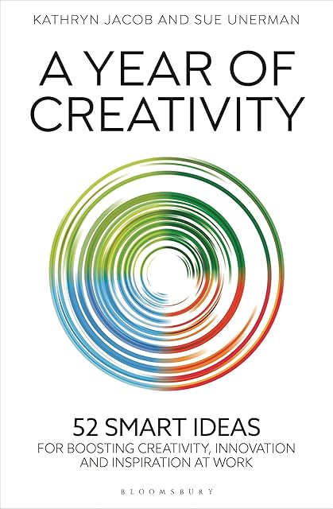

A year of creativity, by Jacob and Unerman
Thursday April 9, 2026
This book has 52 weekly chapters, each with an approach for being creative. I read (very nearly) one per week in 2025. They remind me somewhat of my Thinking Cards, and prompted me to finally get a set of Brian Eno's Oblique Strategies as well. The biggest concept for all of these is just to do something different, to get out of your usual groove, to try to be creative. It's nice that creativity can respond to effort.
What even is creativity? I think it's to do with taking steps that other people haven't taken, going somewhere others haven't gone. Taking more steps, taking steps that other people haven't yet or couldn't take, maybe using knowledge or experiences unique to you. And then you get to that result, that success, that product that stands on its own, and if you don't show the steps that led to it, it looks like something that just appeared out of the blue.

The chapter titles are sometimes quite opaque, but here they are, 13 each for spring, summer, fall, and winter:
- Push the idea until it breaks
- Start a revolution
- Use new
- Exaggerate
- Be brave
- Allow time for shoots to flourish
- Double the resources available
- Prompt the unconscious
- Change direction
- Make it iconic
- Give it purpose
- Random link
- Spring forward and be more dog
- Indulge your gut instinct
- Re-express with a different language
- Be more pirate
- Be bored
- Give into your worst impulse
- What won’t you do? And why?
- Do nothing
- Use an old idea
- Work against your better judgement
- Build back better
- What would someone else say?
- Take a trip
- Be more Wimbledon
- Organize for medium-term success
- Make it famous, fast
- Build communities
- Make the team happy
- Be generous
- Build bridges
- Make people’s lives better
- Deliver outstanding teamwork
- What is missing?
- Harvest
- Listen hard
- Do things in the wrong order
- What would your worst enemy do?
- Uproot and destroy
- Burn bridges
- Go outside
- Deliver long-term success
- How can you get people to want much more?
- Plan to get it up and running in six weeks
- Spend a million
- Be extravagant
- Strip it back
- Quick win
- Push the idea until it scares you
- Give the past a vote (but not a veto)
- Hibernate